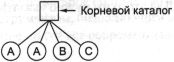

Каталоги
В файловых системах файлы обычно организуются в каталоги или папки, которые,
в свою очередь, в большинстве операционных систем также являются файлами. В
данном разделе мы рассмотрим каталоги, их организацию, свойства и действия,
которые могут быть выполнены с ними.
Одноуровневые каталоговые системы
Простейшая форма системы каталогов состоит в том, что имеется один каталог,
в котором содержатся все файлы. Иногда его называют корневым каталогом,
но поскольку он в таких системах единственный, его название не имеет значение.
Такая система была весьма распространена на ранних персональных компьютерах,
в частности потому, что у них было всего по одному пользователю. Первый в мире
суперкомпьютер CDC 6600 также имел всего один
каталог для всех файлов, несмотря на то, что на нем одновременно работало много
пользователей. Это решение было принято для сохранения простоты программного
обеспечения.
Схематично однокаталоговая система показана на рис. 6.4. В данном примере
каталог состоит из четырех файлов. На рисунке буквами A, В и С показаны
не имена файлов, а их владельцы (так как именно наличие нескольких пользователей
в такой системе создает проблемы). Преимуществом такой схемы является ее простота
и способность быстро находить файлы, так как они могут располагаться только
в одном месте.

Рис. 6.4. Однокаталоговая
система, содержащая четыре файла
Недостаток системы с одним каталогом и несколькими пользователями состоит
в том, что различные пользователи могут случайно использовать для своих файлов
одинаковые имена. Например, если пользователь А создаст файл mailbox,
а затем пользователь В также создаст файл mailbox, то файл,
созданный пользователем В, запишется поверх файла, созданного пользователем
А. Поэтому такая схема более не используется в многопользовательских
системах, но может применяться в небольших встроенных системах, например автомобильной
системе, предназначенной для хранения профилей пользователей для небольшого
количества водителей.
Двухуровневая система каталогов
Первым этапом в деле решения проблемы одинаковых имен файлов, созданных различными
пользователями, можно считать систему, в которой каждому пользователю выделяется
один каталог. При этом имена файлов, созданных одним пользователем, не конфликтуют
с именами файлов другого пользователя. Схематично такая двухуровневая каталоговая
система проиллюстрирована на рис. 6.5. Буквы обозначают владельцев каталогов
и файлов. Такая организация могла, например, использоваться на многопользовательском
компьютере или в простой сети персональных компьютеров, соединенных с общим
файловым сервером локальной сетью.
Рис. 6.5. Двухуровневая каталоговая система
Когда при такой схеме пользователь пытается открыть файл, система знает,
что это за пользователь, и ищет файл в соответствующем каталоге. Следовательно,
для работы в такой системе требуется начальная регистрация пользователя, при
которой пользователь указывает свое имя или идентификатор. В одноуровневой ката-логовой
системе такая процедура не требовалась.
При реализации такой системы в ее базовой форме пользователи могут получать
доступ только к файлам в своем собственном каталоге. Однако небольшая модификация
основной схемы позволяет пользователям получать доступ к файлам других пользователей.
Для этого им нужно указать идентификатор владельца файла. Например, команда
ореn("х")
может быть вызовом для открытия файла х в каталоге пользователя, а
команда
open("nancy/x")
может быть вызовом для открытия файла х в каталоге другого пользователя,
Нэнси. Одна из ситуаций, в которой пользователям может понадобиться получить
доступ к файлам, не находящимся в их каталогах, — это выполнение системных двоичных
программ. Копирование всех системных программ во все пользовательские каталоги
крайне неэффективно. Таким образом, возникает необходимость в создании по крайней
мере одного системного каталога, содержащего все исполнимые двоичные системные
файлы.
Иерархические каталоговые системы
Благодаря двухуровневой иерархии исчезают конфликты имен файлов между различными
пользователями, но ее недостаточно для пользователей с большим числом файлов.
Обычно пользователям бывает необходимо логически группировать свои файлы. Например,
у профессора может быть набор файлов, образующих книгу, которую он пишет для
одного курса, другое множество файлов, содержащее программы студентов для иного
курса. Третий набор файлов может содержать исходные тексты разрабатываемого
им нового компилятора, четвертая группа файлов — предложения различных грантов,
а также электронную почту, расписание собраний, статьи, игры и т. д. Требуется
некий гибкий способ, позволяющий объединять эти файлы в группы.
Следовательно, нужна некая общая иерархия (то есть дерево каталогов). При
таком подходе каждый пользователь может сам создать себе столько каталогов,
сколько ему нужно, группируя свои файлы естественным образом. Этот подход проиллюстрирован
на рис. 6.6. Здесь каталоги А, В и С, содержащиеся в корневом
каталоге, принадлежат различным пользователям, два из которых создали подкаталоги
для проектов, над которыми они работают.
Рис. 6.6. Иерархическая каталоговая система
Возможность создавать произвольное количество подкаталогов является мощным
структурирующим инструментом, позволяющим пользователям организовать свою работу.
По этой причине почти все современные файловые системы организованы подобным
образом.
Имя пути
При организации файловой системы в виде дерева каталогов требуется некоторый
способ указания файла. Для этого обычно используются два различных метода. В
первом случае каждому файлу дается абсолютное имя пути, состоящее из
имен всех каталогов от корневого до того, в котором содержится файл, и имени
самого файла. Например, путь /usr/ast/mailbox означает, что корневой
каталог содержит подкаталог usr, который, в свою очередь, содержит подкаталог
ast, где находится файл mailbox. Абсолютные имена путей всегда
начинаются от корневого каталога и являются уникальными. В системе UNIX компоненты
пути разделяются косой чертой /. В Windows в качестве разделителя используется
обратная косая черта \. В системе MULTICS использовался символ >. Таким образом,
одно и то же имя пути в этих трех операционных системах будет выглядеть следующим
образом:
Windows \usr\ast\mailbox UNIX /usr/ast/mailbox MULTICS
>usr>ast>mailbox
Если первой буквой имени пути был разделитель, это означало, независимо от
используемого в качестве разделителя символа, что путь абсолютный.
Применяется и относительное имя пути. Оно используется вместе с концепцией
рабочего каталога (также называемого текущим каталогом). Пользователь
может назначить один из каталогов текущим рабочим каталогом. В этом случае все
имена путей, не начинающиеся с символа разделителя, считаются относительными
и отсчитываются относительно текущего каталога. Например, если текущим каталогом
является /usr/ast, тогда к файлу с абсолютным путем /usr/ast/mailbox
можно обратиться просто как к mailbox. Другими словами, команда UNIX
ср /usr/ast/mailbox /usr/ast/mailbox.bak
и команда
ср mailbox mailbox.bak
выполнят одно и то же действие, если рабочим каталогом является /usr/ast.
Относительная форма часто оказывается более удобной, но она выполняет то же
самое, что и абсолютная.
Некоторым программам бывает нужно получить доступ к файлам независимо от
того, какой каталог является в данный момент текущим. В этом случае они всегда
должны использовать абсолютные имена. Например, программе проверки правописания
может понадобиться для выполнения работы прочитать файл /usr/lib/ dictionary.
В этом случае она должна использовать полное, абсолютное имя файла, так как
она не знает, каким будет рабочий каталог при ее вызове. Абсолютное имя файла
будет работать всегда, независимо от того, какой каталог является текущим в
данный момент.
Если программе проверки правописания понадобится большое количество файлов
из каталога /usr/lib, она может, обратившись к операционной системе,
поменять рабочий каталог на /usr/lib, после чего использовать просто
имя dictionary для первого параметра системного вызова open. Явно указав
свой рабочий каталог, программа может использовать в дальнейшем относительные
имена, так как точно знает, где она находится в дереве каталогов.
У каждого процесса есть свой рабочий каталог, поэтому, когда процесс меняет
свой рабочий каталог и потом завершает работу, это не влияет на работу других
процессов, и в файловой системе не остается никаких следов от подобных изменений
рабочих каталогов. Таким образом, процесс может спокойно менять свой рабочий
каталог, когда это ему удобно. С другой стороны, если библиотечная процедура
поменяет свой рабочий каталог и не восстановит его при возврате управления,
программа, вызвавшая ее, может оказаться не в состоянии продолжать свою работу,
так как ее предположения о текущем каталоге окажутся неверными. По этой причине
библиотечные процедуры редко меняют свои рабочие каталоги, а когда все-таки
меняют, то обязательно восстанавливают рабочий каталог перед возвратом.
Рис. 6.7. Дерево каталогов UNIX
Большинство операционных систем, поддерживающих иерархические каталоги, имеют
специальные элементы в каждом каталоге. Это «.» и «..»,
означающие текущий каталог и родительский каталог. Чтобы продемонстрировать,
как это работает, обратимся к дереву каталогов системы UNIX, показанному на
рис. 6.7. Для некоторого процесса каталог /usr/ast является рабочим.
Чтобы переместиться вверх по дереву, он может использовать обозначение «..».
Например, он может копировать файл /usr/lib/dictionary в свой собственный
каталог при помощи команды
ср ../lib/dictionary .
Две точки являются инструкцией системе подняться вверх (в каталог usr).
После этого нужно открыть каталог lib и найти в нем файл dictionary.
Одиночная точка означает текущий каталог. Когда команда ср в качестве
второго аргумента получает точку, она интерпретирует ее как текущий каталог
и копирует все файлы туда. Конечно, ту же команду можно было задать и так:
ср /usr/lib/dictionary .
Здесь использование точки позволяет сэкономить время, затрачиваемое пользователем
на набор слова dictionary второй раз. Тем не менее команда
ср /usr/lib/dictionary dictionary
также прекрасно работает и делает то же самое, что и команда
ср /usr/lib/dictionary /usr/ast/dictionary
Все эти команды выполняют одни и те же действия.
Операции с каталогами
Системные вызовы, управляющие каталогами, значительно менее схожи в различных
системах, чем системные вызовы для работы с файлами. Чтобы дать представление
о том, что они собой представляют и как работают, приведем следующий пример
(взятый из UNIX).
1. Create. Создать каталог. Только что созданный каталог пуст и не содержит
других элементов, кроме «.» и «..»,
автоматически помещаемых в каталог операционной системой1.
2. Delete. Удалить каталог. Может быть удален только пустой каталог. Элементы
«.» и «..» файлами не являются и удалены быть не могут.
3. Opendiг. Открыть каталог. После этой операции каталог может быть прочитан.
Например, для распечатки всех файлов, содержащихся в каталоге, программа, создающая
листинг, открывает каталог, чтобы прочитать имена всех содержащихся в нем файлов.
Прежде чем каталог может быть прочитан, его следует открыть, подобно открытию
и чтению файла.
4. Closediг. Закрыть каталог. Когда каталог прочитан, его следует закрыть,
чтобы освободить место во внутренней таблице.
5. Readdir. Прочитать следующий элемент открытого каталога. В прежние времена
было возможно читать каталоги с помощью обычного системного вызова read, но
такой подход был небезопасен, так как требовал от программиста
умения работать с внутренней структурой каталогов. Поэтому был создан отдельный
системный вызов readdi г, всегда возвращающий одну запись каталога стандартного
формата независимо от используемой структуры каталогов.
6. Rename. Переименование каталога. Во многих отношениях каталоги аналогичны
файлам и могут переименовываться так же, как и файлы.
7. Link. Связывание представляет собой технику, позволяющую файлу появляться
сразу в нескольких каталогах. Этот системный вызов принимает в качестве входных
параметров имя файла и имя пути и создает связь между ними. Таким образом, один
и тот же файл может появляться сразу в нескольких каталогах. Подобная связь,
увеличивающая на единицу счетчик i-узла файла (для учета количества каталогов
со ссылками на этот файл), иногда называется жесткой связью.
8. Unlink. Удаление ссылки на файл из каталога. Если файл присутствует только
в одном каталоге, то данный системный вызов удалит его из файловой системы.
Если существует несколько ссылок на этот файл, то будет удалена только указанная
ссылка, а остальные останутся. Этот системный вызов применяется для удаления
файла в операционной системе UNIX.
Приведенный выше список содержит наиболее важные системные вызовы, но существует
также множество других, например для управления защитой информации.